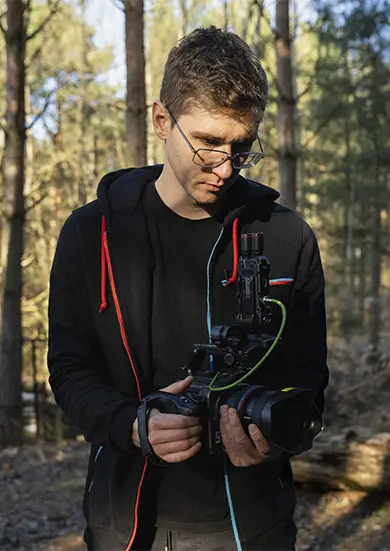
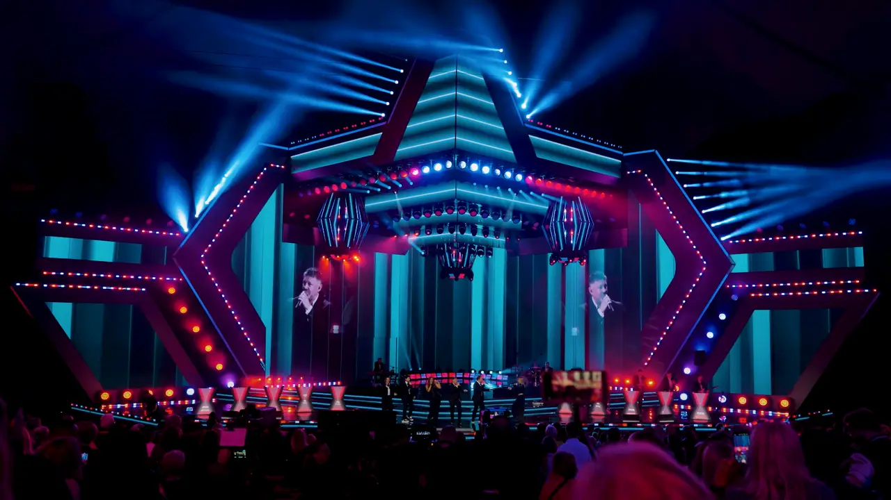

Nie działam masowo
Prowadzę kilka marek naraz, nie kilkanaście. To ograniczenie, które daje uwagę - i jedyny sposób, żeby jakość nie spadła po trzecim miesiącu.
O mnie
Wideo to nie jest dla mnie usługa na sztuki. To sposób, w jaki marka pokazuje się ludziom - dzień po dniu, przez miesiące.

Zaczynałem od pojedynczych zleceń: event, jeden film, koniec tematu. Szybko zobaczyłem, gdzie to nie działa.
Jeden dobry film nie zmienia obecności marki. Zmienia ją konsekwencja - to, że przez kolejne miesiące pod tym samym szyldem wychodzą materiały, które trzymają poziom i mówią jednym głosem. Dlatego dziś nie sprzedaję filmów. Biorę na siebie cały obszar.
Pracuję ze stałym zespołem odpowiedzialnym za produkcję i publikację. To celowe: jeden człowiek nie utrzyma jakości przy regularnym wypuszczaniu materiałów, a przypadkowi podwykonawcy rozjeżdżają styl marki w trzy miesiące.
W skrócie
Prowadzę kilka marek naraz, nie kilkanaście. To ograniczenie, które daje uwagę - i jedyny sposób, żeby jakość nie spadła po trzecim miesiącu.
Nie przychodzę z pytaniem „co publikujemy w tym tygodniu". Przychodzę z kierunkiem, a Ty go akceptujesz albo korygujesz.
Efekt w social mediach buduje się miesiącami. Kto obiecuje inaczej, sprzedaje nadzieję, a nie pracę.
Ten sam film ma się bronić w rolce, w reklamie płatnej i w rozmowie z partnerem wydarzenia. Kręcę z myślą o wszystkich trzech.

Warunki bywają trudniejsze niż plan.
Dym, czerwone światło, tłum i jedno podejście - to normalna sytuacja przy evencie.
30 minut wystarczy, żeby sprawdzić, czy mamy wspólne flow.
Umów rozmowę